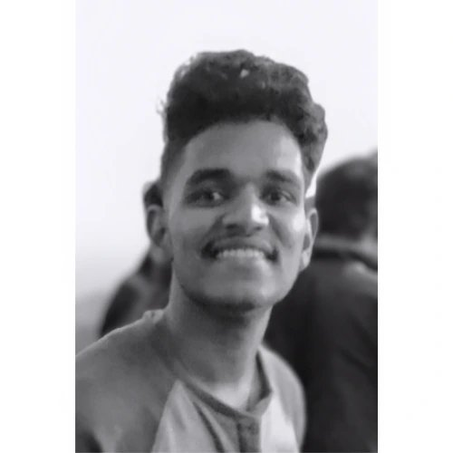

Ananducv

Pursing Full Stack Web Development at Gtech Education
Building web experiences that are as powerful and agile as my roundhouse - web dev with a martial arts edge.
Experience
- Worked as Assistant system administrator at Keyar Group of Companies for 6 months. My main responsibilities included maintaining our network and devices, troubleshooting common networking problems and providing other technical support.Yes! basically I was the IT guy.
- Worked as a salesperson for a Mangalya Jewellers. I know this is irrelevant to my field, but i wanted to showcase my ability to sell. Also when i joined, it was an early stage venture and this helped me learn a lot about an emerging business.
Skills
- Html5, CSS, Javascript
- Python
- Sales and Effective communication
Education
- Passed Matriculation and AISSCE from SVNCS Kodakara(CBSE Affiliated) with 94.6% and 88.8% respectively
- Currently Pursuing Full stack web development at Gtech Education Centre, Chalakudy
Projects
Contact me